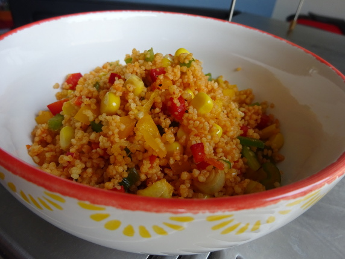

Couscous-Salat

- Zubereitung: ca. 20 Minuten
- Für 4 Portionen
Zutaten
- 250 g Couscous
- 250 ml Gemüsebrühe oder Fond
- 1 EL Tomatenmark
- 2 Paprikaschoten, rot und gelb
- 1 Dose Mais
- 4 Lauchzwiebeln
- 2 EL Reisessig
- 3 EL Olivenöl
- 1 EL Currypaste, rot
- 1 EL Sojasauce
- Chilipulver
- Kreuzkümmel
- Petersilie
Zubereitung
- Den Couscous mit dem aufgekochten Fond übergießen und 10 Minuten ziehen lassen. Die Flüssigkeitszugabe bitte mit der Anweisung des Herstellers abgleichen. Je nach Typ und Hersteller kann eine unterschiedliche Menge nötig sein.
- In der Zwischenzeit das Gemüse und die Kräuter waschen und schnippeln. Tomatenmark, Currypaste, Reisessig, Öl und Sojasauce mit dem Couscous vermengen. Gemüse unterheben und mit Salz, Pfeffer, Chilipulver, Kreuzkümmel und etwas Zucker würzen. Etwas
glatte Petersilie und Zwiebellauchgrün dazugeben.
Quelle : https://www.chefkoch.de/rezepte/562321154438233/Couscous-Salat-lecker-wuerzig.html